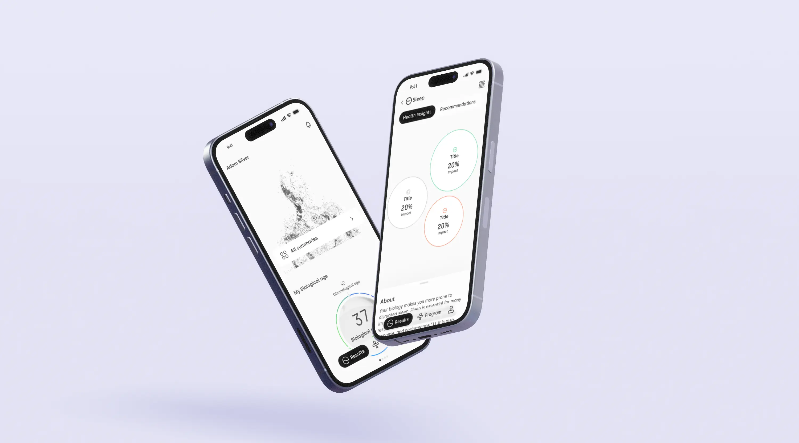
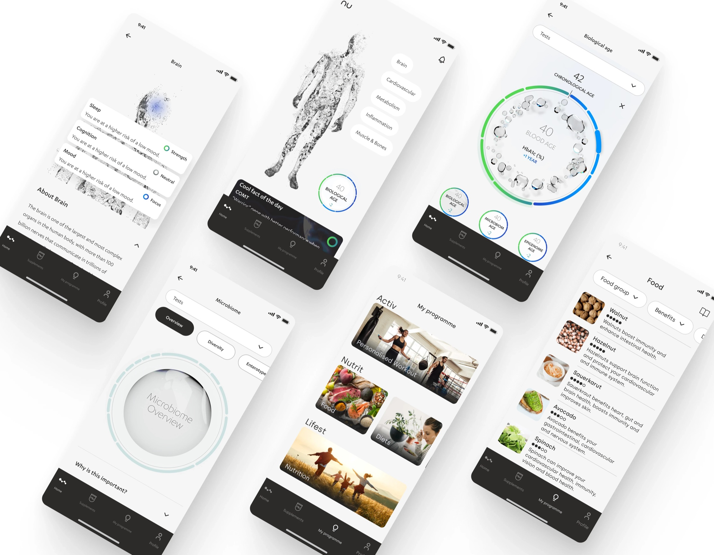
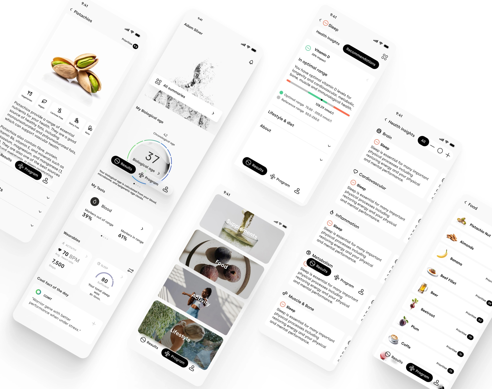
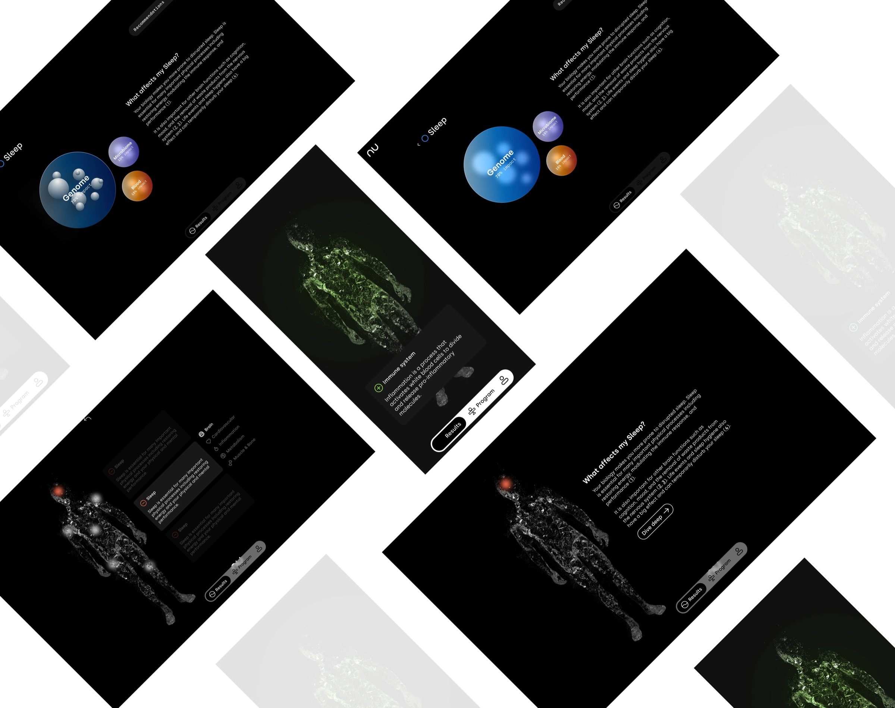

Simplifying data
Making complex health data easy to understand for users without healthcare backgrounds, as many struggled with overly detailed results.
NU, a health tech company, aimed to simplify health data and boost user engagement through a redesigned companion app. I focused on making complex information accessible, improving navigation, and adding features for regular use. Through research and collaboration, we delivered an intuitive, user-friendly platform that aligned with NU's mission.
*Due to a signed NDA, I'm unable to showcase specific details of my work in my portfolio. However, I'd be delighted to discuss it further during a call.

Making complex health data easy to understand for users without healthcare backgrounds, as many struggled with overly detailed results.
Designing a user-friendly interface that remains engaging, ensuring users have a reason to return to the app regularly.
Adding features that provide ongoing value, prompting users to revisit and use the app consistently for updates and retesting.
The impact on users was largely positive, with many reporting a better understanding of their health data and valuing the app's simplified visuals. However, some users still found certain aspects of the app complex, as revealed in user interviews. This feedback led to a proactive response, with several updates implemented to improve navigation and user experience, demonstrating a commitment to continuous improvement.



I'm here to help you create something exceptional — together.